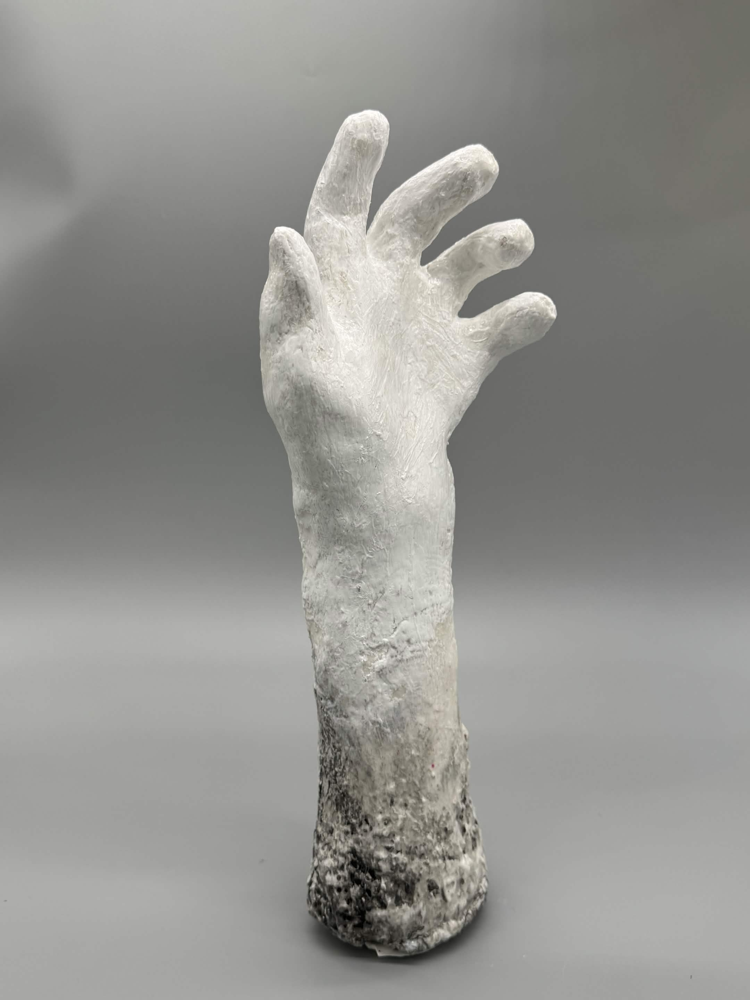
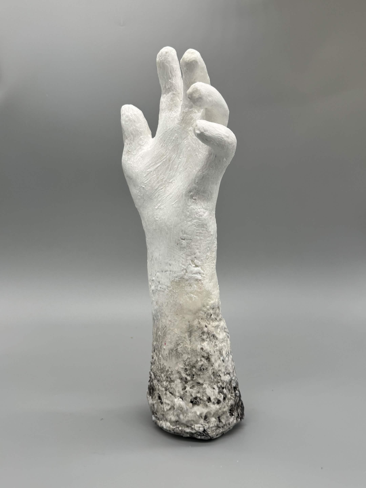
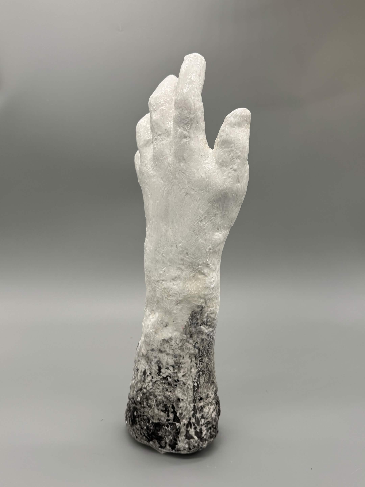

multimedia artist :]
Extension of Self



2.5” x 2.5” x 15.5”
Plaster bandage, Joint compound, Black acrylic paint, Wire, Rocks
This sculpture in particular is meant to represent how a work of art can feel like a part of the artist themselves,
to the most literal degree by being a reflection of the hand that made it. The choice of transitioning from a rough
weathered texture to a smoother, cleaner finish moving from the bottom up is intended to mirror the artistic process
of smoothing and refining a work while showing off how the piece itself originally started. It was also designed in such
a way so that the viewer could pick a starting point from most anywhere on the form and follow it up or down to garner
their own interpretation of what is happening.
This piece was also made as a companion to my previous piece, Extension of Self. It is meant for the previous
work to be worn by this one. The choice of my left arm was influenced by two different factors: The first
was to create a replica of my dominant hand as it is the one that I use for most of the finer motor skills
that go into creating any of my works. The second reason was some loose inspiration from the sculptor
Auguste Rodin, as this year I had seen a piece by him in person at the Cantor Museum that caught my eye
of a left hand contorted in a similar fashion. I was compelled to make the pose of my own sculpture in a
similar pose as I felt it added a nice dynamic energy to it as well as would give the wire piece that
same energy.